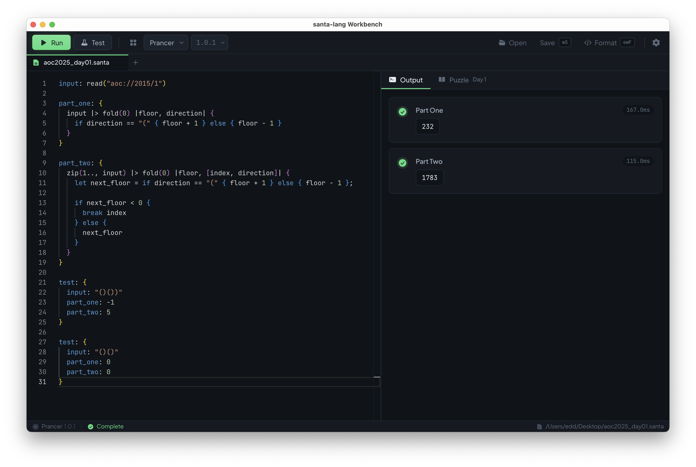
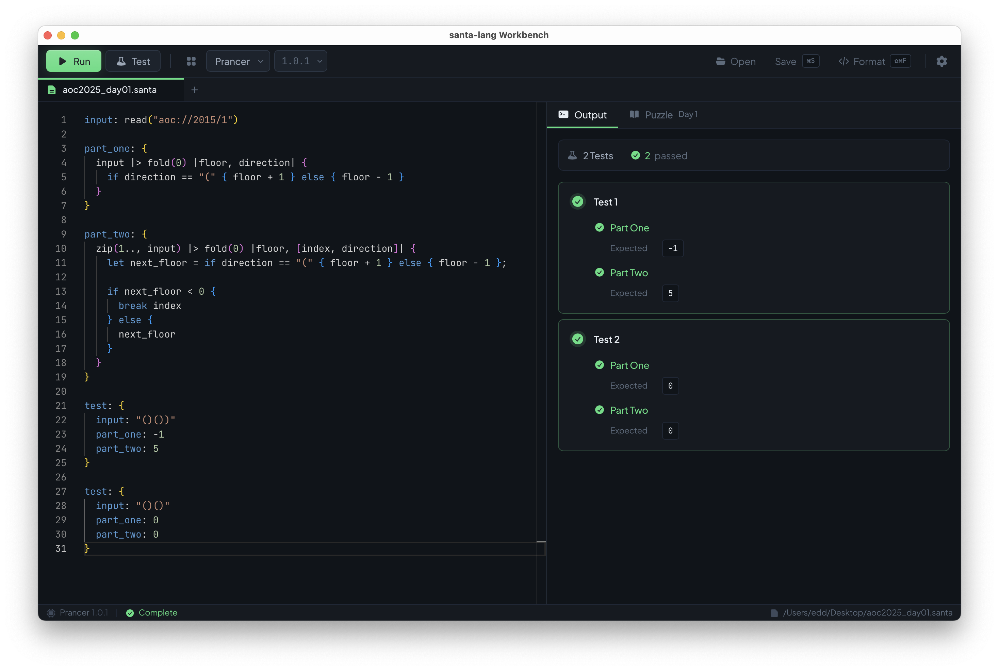
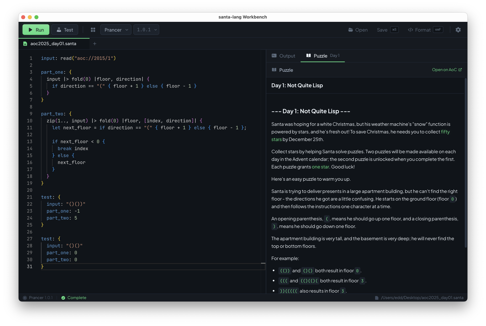
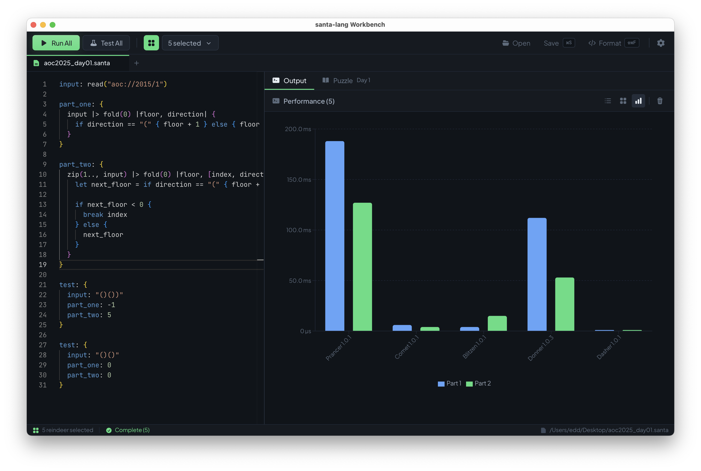

santa-lang
Workbench
A cross-platform desktop IDE for santa-lang, a functional programming language designed for solving Advent of Code puzzles.
brew install eddmann/tap/santa-lang-workbench
Screenshots
A modern editing environment with real-time output, integrated puzzle descriptions, and performance comparison tools.




Features
Built for the Advent of Code workflow, with tools to write, test, and benchmark your solutions.
Run Solutions
Execute santa-lang code with real-time streaming output showing progress as each part runs.
Multiple Reindeer
Download and manage multiple backend implementations. Switch between them instantly.
AoC Integration
Auto-detects read("aoc://YEAR/DAY") patterns and fetches puzzle descriptions and inputs.
Comparative Testing
Run the same code on multiple reindeer simultaneously with side-by-side performance charts.
Code Formatting
Built-in formatting via Tinsel, the santa-lang code formatter.
Modern Editor
Monaco editor with syntax highlighting, multiple tabs, and dark themes.
Reindeer
Five different backend implementations, each with unique characteristics. Compare execution across interpreters, VMs, and compilers.
Built With
Modern desktop development with web technologies.